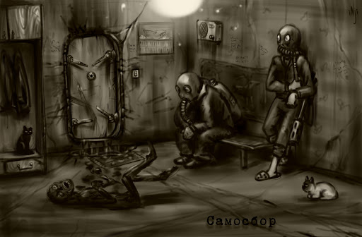

Самосбор
Общее понятие
Самосбор – явление неустановленной природы, происходящее время от времени в Гигахрущёвке и затрагивающее большое количество этажей. Доподлинно неизвестно, что такое самосбор, почему и при каких условиях он происходит, а также, как влияет на организм человека, однако в любом случае влияние пагубно сказывается на здоровье любого живого существа.
Общие сведения
Временно охватывает коридоры и лестничные клетки, есть шанс не проникновения в жилища при запертой и неповрежденной гермодвери. Смертелен, у попавших под самосбор на затронутых этажах вне закрытого помещения шансов выжить нет. Гермодверь не означает полную защиту и безопасность.